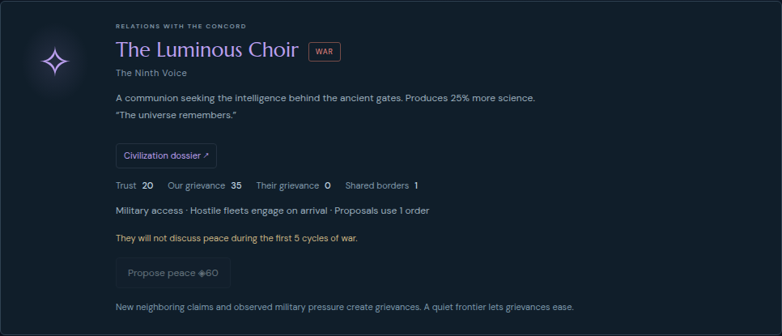

Asterion Reach: mechanics, economy, rivals and pacing critique
Baseline 0.21.2 · 93a62961e994994d30c05240b17c39a418020473 · 29 October 2026
Implement F1 first, leaving F2 as a separately testable policy decision. Predict: a zero-grievance, high-trust player can explain that public victory competition motivated the war without learning a hidden fleet location or ETA. Disconfirm if wording implies an imminent attack before one is known, describes an ordinary frontier war as alignment hostility, or changes any simulation outcome beyond explicit added public metadata.
Read both researched good/bad 4X guides and strategy source ledger; inspect current rules and interface; inspect default, Odyssey and WATCH actual-play reports; independently apply existing default177 and Odyssey280 ordinary-command transcripts under the baseline engine and compare complete final actual exports; run one separately labeled no-peace counterfactual and one synthetic occupied-beacon boundary. Inspect current production diplomacy using an imported unedited actual cycle55 checkpoint. No new played campaign and no new balance sample.
Audience assumption: A compact, readable single-player 4X with a competitive public beacon race and room for peaceful expansion. Whether enduring alliances should ever concede victory is a design choice, not a universal rule.
Findings and priorities
F1 · Victory competition explains intervention wars internally but is missing from diplomatic explanations
Observed information omission; inferred player-model cost · severity medium · confidence high for omitted cause; medium for engagement impact
- Default exact replay: Choir declares during operations53, viewed54, with previous trust85, grievance0, active trade, one shared border and Concord public alignment3/10. Khar declares during54, viewed55, with previous trust58, grievance0, active trade, zero shared borders and Concord4/10.
- Default actual checkpoint50 records a paid35-credit Choir gift during49. The declaration is not explained by low goodwill or frontier grievance.
- src/ai.js:899-905 deliberately selects a feasible intervention and passes a reason. src/diplomacy.js:226-240 emits generic war/betrayal text and discards that reason. Diplomacy renders only the frontier policy from getDiplomacyForecast.
- Current production read-only browser inspection of imported actual cycle55 shows their grievance0 and the generic frontier explanation for both wars. The sole alignment mention is elsewhere in the page's broader game state, not an explanation in either diplomatic card.
A player who invests in gifts and avoids disputed borders cannot use the visible diplomatic model to understand why a friend broke trade. The operation itself is coherent; its political cause is hidden.
Disconfirming evidence and limits
- Public beacon progress and the race are already visible in Empire; a player may infer the motive.
- The default transcript does not record the player explicitly expressing confusion. This is a demonstrated causal-information gap, not an observed rage-quit or broken-AI claim.
Action: First iteration: explain, using public race facts only, that leading alignment can create a competitive incentive despite trust. At a qualifying declaration record an authored public cause, rather than raw AI reason/route/fleet/ETA. Keep war choice, cost, timing and RNG unchanged.
F2 · Peace willingness ignores the same public finish that intervention policy tries to interrupt
Observed rule interaction plus synthetic exploitable boundary · severity medium · confidence high for behavior; medium for desired policy
- src/diplomacy.js:36-51 accepts Veyr/Choir after12 war cycles solely from age; Khar after16. Public alignment and a current blockade never enter the formula.
- Actual Odyssey65 ordinary commands buy two60-credit truces while Concord is public9/10. Both are legal and consistent with the displayed current rule.
- A valid synthetic fixture derived from replayed Odyssey65 removes Concord's local defenders and moves one existing Veyr frigate onto a participating Beacon. Without settlement, next progress is8/10 and no winner; paying the ordinary60 credits accepts peace, withdraws the blocker and produces10/10 victory66. Veyr has lost zero colonies and does not face observed pressure in this fixture.
Disconfirming evidence and limits
- Omitting both final peace commands from the unedited replay-derived actual Odyssey65 still yields Concord victory66. The actual settlements therefore do not prove that peace removed a necessary challenge.
- An exhausted or badly defeated civilization can reasonably accept peace despite another's imminent achievement. A blanket no-peace-at8 rule would replace this inconsistency with rigidity.
- A personality-led ally might intentionally allow a friend's victory. The current intervention AI is partly competitor-led, making this an explicit design choice.
Action: Follow-on only: test public-race-aware willingness when a truce would guarantee a faster rival's finish, especially when the recipient currently maintains a blockade. Preserve meaningful surrender/exhaustion cases, and explain the motive visibly. Do not implement solely to make Odyssey harder.
F3 · Orders cease to be a meaningful scarce resource in the observed compact mid/late game
Observed narrow action-economy limit · severity low · confidence high for this trace; low for global balance
- Across default cycles12-59, median unspent Orders is8. Cycles40-59 leave207 of238 available Orders unused and have9 cycles with no paid player action. Production, minerals, travel and slots continue to bind.
- The default finish retains1902 credits, while final ordinary income86 exceeds the60 alignment payment; the campaign never has a funding interruption. All12 technologies finish by57, only three cycles before victory.
Do not claim the shared order pool supplies recurring depth throughout this compact campaign. Civic order investments are situational and often have little marginal value here.
Disconfirming evidence and limits
- WATCH opening reaches zero Orders; Command's extra movement enables actual redeployment and a limited invasion. Larger multi-front wars may consume the pool.
- Unused resources are prudent insurance and permission to stop investing. They are not evidence that new currencies, repeatable technologies or resource sinks are needed.
- Quiet cycles52-53 immediately precede two serious defensive battles. Lack of clicks is not lack of anticipation.
Action: No immediate rule change. Compare a contested military campaign and another compact opening before changing capacity or adding civic uses. If the same slack persists, simplify weak order investments or improve their context instead of creating maintenance costs.
Imported actual checkpoint, inspected on current baseline
This is a read-only UI inspection of the unedited actual default cycle55 save. It is not a newly played campaign. Both cards show zero rival grievance and describe frontier policy, without explaining public-race hostility.

Strengths supported by actual decisions
| Area | Evidence |
|---|
| Opportunity costs | WATCH's ForgeII crosses24→30 production so26-work frigates finish in one cycle; its late lab-to-yard replacement sacrifices9 science for useful reinforcements. Odyssey replaces laboratories with yards and loses Nacre's Academy support. Default replaces two Extractors with Shipyards while retaining Beacons. Slots, work thresholds, repair and timing interact; the building menu is not just a row of larger bonuses.
high for actual decisions, not proof of optimality |
| Diplomatic tradeoffs | WATCH declines Choir trade while thinly defended, accepts later, purchases a Khar corridor, and ends Veyr trade after reciprocal transit permits a backyard settlement. Acceptance and refusal have credible reversing situations.
high for this observed history |
| Opponent capability | Default Choir/Khar race declarations become real arrivals and combat. Odyssey records three sustained alignment interruptions,13 lost frigates and a cruiser, with repair and relief responses. This disconfirms a blanket claim that AI hostility is theatrical.
high; does not establish optimal AI concentration |
| Victory pacing | Transcendence completes around60-66 rather than forcing120-cycle cleanup. WATCH's limited Beacon seizure matters to a simultaneous public race; Odyssey finishes one alignment step ahead of Khar. Default's final Haven battle destroys its four-frigate lead but leaves the cruiser and finish alive.
high for those outcomes; subjective decisive moment unmeasured |
| Bounded breadth | Twelve technologies, four hull classes and slot-limited development offer actual research/production/route reversals. WATCH chooses a one-cycle frigate over a newly unlocked cruiser that would arrive too late. There is no evidence-based need for more hull classes or research breadth here.
medium |
What remains untested
- Whether an optimizer can repeat one opening profitably across seeds; inspecting scripts or one actual win cannot establish replayability.
- Whether the economy allows recovery from extreme early resource loss without a scripted safety net.
- Whether Domination and Legacy are competitive goals under equal skilled play. IRON proves Domination can be played, not route balance.
- First-time understanding of high-trust intervention wars and resumed-save intention. This review observes the information gap, not human error rates.
- How much work follows each player's perceived decisive moment. End dates alone cannot measure fatigue.
Bounded ratings; no aggregate fun score
| Area | 0–2 | Scope |
|---|
| Decision depth | 2 | Observed colony/ship/trade decisions; optimizer robustness untested |
| Rival capability | 2 | Recorded interventions reach consequential engagements |
| Diplomatic motive legibility | 1 | Frontier cause explained; alignment motive omitted |
| Victory pacing | 1 | Contested endings observed; perceived resolution and repeated play untested |
Evidence and reproducibility
Structured critique · Replay and probe script · Full measurements · Replay-derived pre-settlement state · Current-baseline visible diplomacy text
Independent replay verifies these histories, not engagement. No new human observations, representative sample, victory-rate claim or optimal-policy claim. All research source claims remain arguments or anecdotes as labeled in the guides. No game source was edited during this critique.
Research applied: good-4x.html sections2,6,7,10; bad-4x.html sections2,6,7,10; strategy sources S01 Felder: depth versus complexity; S02/S03 Johnson: scarce actions and distinct yields; S04/S05 Johnson: diplomacy and endings; S06 Shafer: coherent plans and readable motives; S09 Dyce: readable intentions without rigid procedures